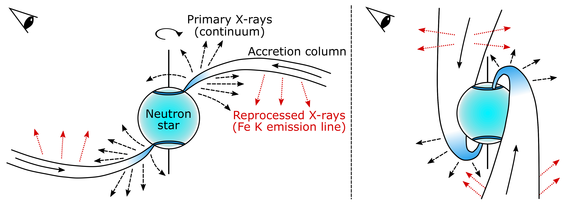

生成时间：2026-05-05T21:18:32+08:00
今日保留论文数：1
高能天体物理重点
1. XRISM/Resolve observations of Hercules X-1: a pulsating, highly broadened Fe K emission line from the neutron star accretion column
- 来源：arXiv / astro-ph.HE
- 链接：https://arxiv.org/abs/2605.01146v1
- 作者：Peter Kosec, Laura Brenneman, Erin Kara, Ciro Pinto, Daniele Rogantini, Rudiger Staubert, Dominic Walton, Francesco Barra
- 评分：novelty 8/10，importance 8/10，relevance 9/10，final 9.35/10
- 推荐理由：XRISM/Resolve high-resolution spectroscopy confirms and phase-resolves the extremely broad Fe K feature in Her X-1, linking it to the neutron-star accretion column and 35-day precession. Strongly relevant X-ray pulsar/accretion-column result with clear observational advance.
中文题目：XRISM/Resolve 观测 Her X-1：来自中子星吸积柱的脉动、强展宽 Fe K 发射线
做了什么：这篇文章用 XRISM 的 Resolve 微量热计对经典 X 射线脉冲星 Hercules X-1 做了约 200 ks 的高光谱分辨率观测，重点分析 6–7 keV 附近的 Fe K 能段。作者确认 Her X-1 存在一条中心约 6.5 keV、1σ 宽度约 1 keV 的强展宽铁线，其对应的速度尺度超过 0.1c，难以用普通窄线区或外盘反射解释。通过脉冲相位分辨谱分析，他们发现这条宽铁线随中子星自转相位显著变化，并且其相位调制模式还随 Her X-1 的 35 天超轨道周期改变。论文将这些结果解释为铁线来自中子星磁极附近的吸积柱，可能由碰撞复合或主 X 射线在吸积柱内再处理产生；35 天演化则支持中子星和吸积柱发生进动的图像，与 IXPE 偏振观测得到的结论相呼应。
为什么重要：Her X-1 是研究磁化中子星吸积、吸积柱辐射转移和中子星几何进动的标杆源。过去 CCD 或光栅数据已经暗示它有异常宽的 Fe K 发射线，但铁线附近还混有窄荧光线、吸收结构、连续谱曲率和仪器分辨率效应，导致其起源长期不够清楚。XRISM/Resolve 的高能量分辨率让作者能把宽线与窄线、吸收边和连续谱分开，从而把“宽铁线是否真实、是否脉动、是否来自吸积柱”这个问题推进到更可靠的观测层面。若吸积柱宽线可以稳定建模，它会成为直接探测强磁场、强引力环境中流体速度场和中子星进动的新工具。
理论 / 观测 / 仪器方法价值：对观测而言，这篇文章展示了微量热计在亮 X 射线双星 Fe K 复杂谱区的实际威力：不是简单提高信噪比，而是把多种谱成分分离开，并做脉冲相位分辨。对理论而言，论文为吸积柱辐射模型提出了一个新的、可量化的约束量：宽铁线的能量、宽度、通量和相位调制。对方法而言，它说明未来不能只用静态平均谱解释 X 射线脉冲星的铁线，而需要联合自转相位、超轨道相位、连续谱和几何模型。对仪器科学而言，这是 XRISM/Resolve 在强磁场致密天体谱学中的一个关键示范案例。
为什么应该关注：如果你关心中子星内部、强磁场吸积或 X 射线偏振，这篇文章值得看，因为它把谱线诊断和几何进动联系起来。宽 Fe K 线不只是一个“拟合残差”，而可能是吸积柱速度场、视线投影和中子星自转/进动的示踪器。未来若能用物理模型替代经验高斯线，就可能通过普通 X 射线谱学追踪中子星进动，进而约束中子星形变、内部结构和磁场—吸积流耦合。
展开详细解读：文章讲解、背景、理论、重点章节、图表与相关工作
文章详细讲解
科学问题：X 射线脉冲星的吸积柱位于磁化中子星表面附近，是强引力、强磁场和辐射主导流体同时起作用的区域。Her X-1 过去被发现有一条异常宽的 Fe K 发射线，宽度对应多普勒速度超过 0.1c。这样的速度尺度接近中子星近表面自由落体或柱内湍动/定向流速度，因此若铁线确实来自吸积柱，它将提供少见的、直接约束吸积柱内部物理的谱线探针。核心问题是：这条宽线是否真实存在，能否与窄荧光线和连续谱曲率区分开？它是否随脉冲相位变化，从而支持吸积柱起源？
作者怎么做：论文利用 XRISM/Resolve 对 Her X-1 进行约 200 ks 观测。Resolve 的微量热计能在 Fe K 能段提供远优于 CCD 的能量分辨率，使作者可以把宽 Fe K 成分、较窄的铁荧光/电离线成分、吸收或边缘结构以及连续谱分开建模。作者首先对相位平均谱做经验模型拟合，确认在约 6.5 keV 附近需要一个强展宽成分；随后把数据按中子星脉冲相位切分，检查宽线的强度、宽度或轮廓是否与自转几何相关；最后把本次结果放到 Her X-1 的 35 天超轨道周期框架下，与已有不同时期观测和 IXPE 偏振结果比较。
关键结果：相位平均谱确认存在一条中心接近 6.5 keV、典型 1σ 宽度约 1 keV 的宽发射线。这个宽度远大于普通热展宽和仪器展宽，若解释为速度展宽，意味着 v/c 量级约为 0.1 或更高。相位分辨分析显示该特征随脉冲相位强烈变化，这与固定在中子星磁极附近、随中子星自转扫过视线的吸积柱图像一致。更进一步，铁线的脉冲相位图样会随 Her X-1 的 35 天周期演化，支持中子星及其吸积柱发生进动，而不仅仅是外盘遮挡造成超轨道调制。
局限和下一步：这篇文章主要使用现象学模型描述宽线，还没有给出完整的磁化吸积柱辐射转移模型。宽线可能混合了速度展宽、康普顿散射、几何遮挡、不同电离态铁线叠加以及连续谱误建模等效应；这些成分在经验拟合中并不总能唯一分离。下一步需要发展能同时计算柱内速度场、电离结构、辐射转移、相位依赖和相对论/磁场效应的物理谱模型，并与 XRISM、IXPE、NICER、NuSTAR 等多波段和偏振数据联合拟合。
背景知识
Her X-1 是一颗经典的吸积供能 X 射线脉冲星，由中子星和伴星组成，中子星从伴星处获得物质并沿磁力线导向磁极附近，形成一个或两个吸积柱。它的自转脉冲、食、轨道调制和约 35 天超轨道周期使它成为研究 X 射线双星几何结构的教科书对象。35 天周期传统上常被解释为倾斜吸积盘的进动导致遮挡变化，但近年的偏振和谱时变结果提示，中子星本体或磁轴几何也可能参与进动。
Fe K 发射线是 X 射线天体物理中最常用的诊断工具之一。在黑洞和弱磁场中子星系统中，宽 Fe K 线常被解释为内盘相对论反射；在强磁场 X 射线脉冲星中，情况更复杂，因为内盘会被磁层截断，铁线也可能来自伴星风、外盘、吸积流、磁层边界或吸积柱。Her X-1 的异常宽 Fe K 成分因此很重要：如果它来自吸积柱，就不同于标准的内盘相对论反射解释，而是直接探测磁极附近的高速等离子体。
为什么现在值得重看，关键在于 XRISM/Resolve 的光谱分辨率。以往 CCD 谱在 6–7 keV 附近容易把多条窄线、宽线、吸收结构和连续谱曲率混在一起，导致“宽铁线”可能被怀疑是模型不充分造成的伪迹。Resolve 微量热计可以用更窄的响应函数解析 Fe K 复合谱区，从而更可靠地识别真正需要的宽成分。常见误区是把所有宽 Fe K 线都自动归因于相对论内盘，或把所有 35 天变化都归因于外盘遮挡；这篇工作提醒我们，在强磁场脉冲星中，吸积柱本身也能产生强烈相位依赖的铁线。
基础理论 / 方法脉络
核心物理图像是：物质在磁层半径处被中子星强磁场控制，沿磁力线落向磁极。接近表面时，流体速度可以达到显著的光速分数，并在辐射压力、碰撞、激波或库仑制动作用下减速，形成吸积柱。若柱内或柱表面存在适当电离态的铁，主 X 射线照射或碰撞过程可产生 Fe K 发射；由于柱内流速、湍动、散射和视线投影随自转相位改变，线轮廓也会随脉冲相位调制。
关键量包括铁线中心能量、线宽、等效宽度、线通量、相位依赖和与连续谱脉冲的相对相位。中性铁 Kα 接近 6.4 keV，He-like Fe XXV 约 6.7 keV，H-like Fe XXVI 约 6.97 keV；Her X-1 中约 6.5 keV 的宽成分可能意味着不同电离态混合、重力红移/多普勒位移或复杂辐射转移。1 keV 量级的高斯 σ 不是普通热速度可轻易解释的，通常指向高速 bulk motion、强散射或多成分叠加。
观测和数据分析逻辑上，Resolve 的作用是降低谱线混叠。相位平均谱可以确认是否存在宽成分，但只有脉冲相位分辨谱才能检验其是否与中子星自转几何绑定。若宽线来自远离中子星的外盘或伴星环境，它不应在单个自转周期内出现强烈、重复的相位调制；若来自吸积柱，则线通量和轮廓应随磁极朝向、柱体可见面积、遮挡和局部速度投影而改变。需要警惕的退化包括连续谱曲率与宽线宽度的退化、多个窄线族与单个宽高斯的退化、吸收边与发射线红翼/蓝翼的退化，以及不同相位 bins 中信噪比变化带来的选择效应。
公式与推导
可以从最简单的速度展宽估计开始。若一条本征能量为 $E_0$ 的 Fe K 线由视线方向速度分布展宽，在非相对论近似下有
其中 $\sigma_E$ 是观测到的高斯能量宽度，$\sigma_v$ 是视线速度弥散，$c$ 是光速。对 Her X-1 中 $E_0\sim 6.5\,\mathrm{keV}$、$\sigma_E\sim 1\,\mathrm{keV}$，得到 $\sigma_v/c\sim 0.15$，这说明谱线宽度对应吸积柱尺度的高速流动，而不是普通恒星风窄线区。
若把速度尺度与中子星附近自由落体速度比较，可写为
其中 $G$ 是引力常数，$M$ 是中子星质量，$r$ 是到中子星中心的半径。对 $M\sim1.4M_\odot$、$r$ 为几十公里量级时，$v_{\rm ff}$ 可达光速的显著分数。因此 0.1c 量级速度与近表面吸积柱并不矛盾，但它要求发射区足够靠近中子星或存在强 bulk/turbulent motion。
线中心能量还可能受重力红移影响。静态 Schwarzschild 近似下，表面附近发射能量 $E_{\rm em}$ 与远处观测能量 $E_{\rm obs}$ 的关系为
其中 $R$ 是发射半径。若发射区接近中子星半径，$z$ 可达 0.2–0.4 量级；但真实吸积柱还叠加多普勒蓝移/红移、角度效应和散射，因此不能只用线心直接反推出半径。
相位依赖可用一个几何投影因子描述。若磁轴与自转轴夹角为 $\alpha$，观测视线与自转轴夹角为 $i$，自转相位为 $\phi$，则磁柱方向与视线夹角 $\theta$ 满足
这里 $\theta$ 控制柱体可见面积、速度投影和照射角。若线通量近似随投影和遮挡变化，可写成 $F_{\rm line}(\phi)\propto A_{\rm vis}(\theta)\,\epsilon(\theta)$，其中 $A_{\rm vis}$ 是可见面积，$\epsilon$ 是角向辐射效率。
实际谱拟合中常用经验高斯线描述宽成分：
其中 $F_{\rm cont}$ 是连续谱，$N_{\rm line}$ 是宽线总光子通量，$E_c$ 是线心，$\sigma_E$ 是线宽，$F_k$ 表示窄线、吸收边或其他局部成分。论文的主要可观测量就是 $E_c$、$\sigma_E$、$N_{\rm line}$ 及其随脉冲相位和 35 天相位的变化。
模型拟合 / 应用方法
这类分析通常从相位平均谱开始，用一个适合 X 射线脉冲星的连续谱模型描述宽能段形状，再在 Fe K 区加入窄发射线、吸收结构和一个宽高斯或类似经验线型。关键不是单纯看加入宽线后统计量改善多少，而是检查宽线参数是否稳定、是否被连续谱模型选择支配、是否在不同背景/响应/能段选择下仍然存在。XRISM/Resolve 的高分辨率优势在于窄线参数可以更独立地确定，从而减少“多个未解析窄线伪装成宽线”的风险。
相位分辨拟合中，常见做法是把脉冲周期分成多个 phase bins，对每个 bin 拟合线心、宽度、归一化和连续谱参数。为了提高稳定性，一些参数可能在各相位间联动或固定，例如窄线能量、吸收柱密度、仪器校正常数等；而宽线通量或归一化通常允许自由变化。似然函数可近似看作 Poisson 计数谱的 Cash statistic 或高计数下的 $\chi^2$，后验则由统计误差、模型先验和系统误差共同决定。读者应重点看宽线通量变化是否超过连续谱归一化变化，线宽变化是否与信噪比或相位 bin 选择相关。
主要退化关系包括：宽线宽度与连续谱局部曲率退化，线心与不同铁电离态混合退化，宽线通量与局部吸收/遮挡退化，以及相位依赖与 35 天周期几何状态退化。实际应用上，如果未来有物理吸积柱模型，可以把相位分辨线轮廓与脉冲轮廓、偏振角摆动、回旋吸收线能量变化联合拟合，约束磁轴倾角、柱高、速度场、进动角和可能的中子星形变。残差图应重点看 Fe K 区是否还有相干的正负残差：若宽线模型正确，加入该成分后残差不应在 6–8 keV 呈系统性宽峰或宽谷。
重点章节 / 结果段落怎么读
-
数据/样本部分：先看 XRISM/Resolve 观测的时间覆盖、有效曝光、Her X-1 所处的 35 天周期相位、数据筛选和背景处理。对 Her X-1 这种强变源，观测时处于 main-on、short-on 还是低态非常关键，因为遮挡几何会直接影响铁线可见性。
-
相位平均谱建模：重点看作者如何建立连续谱，Fe K 区加入了哪些窄线、吸收边或局部成分，以及宽高斯的统计必要性。读者应检查宽线中心约 6.5 keV、σ 约 1 keV 的参数是否对模型选择稳健。
-
脉冲相位分辨分析：这是论文最关键部分。应看相位 bins 的定义、每个 bin 的计数统计、哪些参数跨相位固定、哪些参数自由，以及宽线通量/轮廓与主脉冲之间的相位关系。若宽线起源于吸积柱，它的变化不应只是连续谱强弱的简单缩放。
-
35 天周期比较：看作者如何把本次 XRISM 结果与过去观测或不同超轨道相位下的谱线行为比较。这里的核心不是单次观测证明进动，而是宽线脉冲图样随 35 天周期演化，并与中子星/吸积柱进动解释相容。
-
讨论与未来模型：重点读作者对碰撞复合、X 射线再处理、吸积柱几何和 IXPE 偏振结果的讨论。现象学模型已经足以说明宽线存在和相位依赖，但物理解释仍需要更完整的辐射转移模型。
建议重点查看的图表
-
相位平均 XRISM/Resolve 能谱和残差：看 6–7 keV 附近在无宽线模型时是否有宽正残差，加入宽线后残差是否消失。
-
Fe K 局部放大图：检查窄线、宽线和连续谱的分离程度；尤其要看宽成分是否比 Resolve 响应宽得多。
-
脉冲轮廓与相位 bin 划分：看宽线增强相位是否对应主脉冲、次脉冲、脉冲下降沿或某个特定几何视角。
-
宽线参数随脉冲相位变化图：重点看线通量、等效宽度、线心和宽度的置信区间；判断变化是否显著以及是否与连续谱参数退化。
-
不同 35 天相位或不同历史观测的比较图：看铁线脉冲模式是否发生相位漂移或形状改变，这关系到进动解释。
-
模型残差/稳健性检验表：检查替换连续谱模型、改变能段、固定或释放窄线参数后，宽线是否仍被需要。
-
若有几何示意图：看作者假设的自转轴、磁轴、吸积柱、盘遮挡和观测视线关系；不要把示意图当成唯一拟合解。
关键图表逐图导读
图 1：通常应是 XRISM/Resolve 的宽能段或 Fe K 能段相位平均谱。横轴为能量，纵轴为计数率、光子通量或 unfolded flux；数据点是 Resolve 谱，模型线包含连续谱、窄线和宽 Fe K 成分。读图重点是 6.5 keV 附近的宽峰是否远宽于仪器响应。陷阱是 unfolded 谱会依赖模型，真正判断应看计数空间拟合和残差。
图 2：应重点查看 Fe K 区局部残差图。横轴为 5–9 keV 左右能量，纵轴为 data/model 或 residual sigma。若不加宽线，残差应表现为跨越约 keV 尺度的正结构；加入宽线后残差应变得无系统趋势。陷阱是窄线未充分建模时可能在宽线峰上产生局部尖峰，不能把所有残差都归入宽线。
图 3：脉冲轮廓和相位划分图。横轴为中子星自转相位，纵轴为计数率或归一化强度，可能分不同能段显示。读者要看相位 bins 是否覆盖主峰、谷值和次峰，以及 Fe K 线变化是否与总流量变化同步或有相位偏移。陷阱是相位 bin 太宽会平均掉快速变化，太窄则会增加谱参数不确定性。
图 4：宽 Fe K 线通量或等效宽度随脉冲相位变化图。横轴为脉冲相位，纵轴为线通量、EW 或归一化；误差棒代表统计置信区间。若线来自吸积柱，应看到强烈相位调制。读图时要比较线通量与连续谱通量：若 EW 也变化，说明不是简单的照明强度缩放。
图 5：线心和线宽随相位变化图。横轴为脉冲相位，纵轴为 $E_c$ 或 $\sigma_E$。若线心或宽度随相位变化，可能反映速度投影、电离态变化或遮挡变化。陷阱是线心、宽度和归一化在低信噪比相位中高度相关，单个异常点不应过度解释。
图 6：35 天周期比较或历史观测对比图。横轴可能为脉冲相位或超轨道相位，纵轴为铁线强度/调制幅度。关键是看本次 XRISM 图样是否与其他 35 天相位下不同，并是否符合中子星/吸积柱进动而非固定外盘线区。陷阱是不同仪器的能量分辨率和连续谱模型不同，直接比较绝对线宽要谨慎。
论文原图 / 可嵌入图片
Fig01

图注：A schematic of Her X-1, its accretion column and the possible emission sites of the broad Fe K line. Accreting matter follows magnetic field lines along the column (solid arrows). As it decelerates, it emits primary X-rays (dashed arrows). Some of the primary emission is reprocessed by the column and the Fe K line emission is produced (maroon dotted arrows). As the star rotates, due to the changes in the observed accretion column solid angle, projected infall velocity, relativistic beaming and light bending, the Fe line flux, energy and width should all vary with the neutron star rotation phase.
来源与置信度：arxiv_source；high；arxiv_source / main.tex:figure[1]
Fig02

图注：\xrism\ (black) and \nustar\ (red) pulse profiles for all 3 Her X-1 orbits (using the 21 pulse bin extraction) in the energy bands which we used for pulse-phase-resolved spectral fitting: $1.8-12$ keV for \xrism/Resolve and $11-75$ keV for \nustar\ FPMA and FPMB. The uncertainties are smaller than the size of the datapoints.
来源与置信度：arxiv_source；high；arxiv_source / main.tex:figure[2]
Fig03

图注：Time-averaged \xrism\ (black) and \nustar\ (green) spectrum (top panel) and ratio residuals (lower panel) of Orbit 2, fitted with the spectral model described in section \ref{sec:modelsetup}. For visual purposes, only the Hp event \xrism\ data are shown and are heavily over-binned. Both FPMA and FPMB \nustar\ data are shown (superposed). The best-fitting model is split into components in the \xrism\ energy band: blue is the primary continuum (the \textsc{bwcycl} component), cyan shows the contribution of the broad Fe K line. The total model, which includes narrow Fe K$\alpha$ and K$\beta$ emission lines as well as a broadened Fe XXV emission line, is shown in red. All components include narrow line absorption from the ionized disk wind of Her X-1. The $\sim10$\% jump between the \xrism\ and the \nustar\ data is due to the usage of cross-calibration constants, which account for any residual differences between the instrument calibrations, and any real variations in the Her X-1 X-ray flux over time considering the \nustar\ exposure only covers part of the \xrism\ exposure.
来源与置信度：arxiv_source；high；arxiv_source / main.tex:figure[3]
强相关工作
这篇工作应放在三条文献线索中阅读。第一条是 Her X-1 的长期 X 射线时变和 35 天周期研究，包括倾斜吸积盘进动、脉冲轮廓演化和回旋吸收线变化。传统观点偏向外盘进动解释超轨道周期，而近年来越来越多结果提示中子星几何或磁柱方向也可能随时间改变。建议检索关键词：Her X-1 35 day cycle, accretion disk precession, neutron star free precession, pulse profile evolution。
第二条是 X 射线脉冲星 Fe K 线和吸积柱谱学。与黑洞内盘反射不同，强磁场脉冲星的铁线可能来自外盘、磁层、伴星风或吸积柱。Her X-1 的宽线若来自吸积柱，会把 Fe K 线从“环境反射诊断”提升为“近表面流体速度场诊断”。建议检索关键词：X-ray pulsar broad Fe K line, accretion column iron line, XRISM Resolve X-ray binary, Fe K emission neutron star magnetic accretion。
第三条是 IXPE 对 Her X-1 的偏振观测。偏振角随相位变化可直接约束辐射几何，与本文的相位分辨 Fe K 线互补：偏振告诉我们辐射方向和磁场几何，铁线告诉我们再处理/复合区域的速度和电离结构。若二者都指向吸积柱进动，将比单一谱学或单一偏振解释更有说服力。建议检索关键词：IXPE Hercules X-1 polarization neutron star precession, X-ray polarization accretion column。
相似工作：
- https://arxiv.org/abs/2605.01146
基础理论 / 方法工作：
（未提供）
相反观点 / 张力线索：
（未提供）
说明
评分由 LLM 给出初评，再由本地阈值策略过滤；IACT / 大气切伦科夫望远镜相关论文按 HE 同等优先级处理，其他非 HE 论文需要明显关联高能天文、宇宙线、伽马射线或仪器/方法价值才会保留。